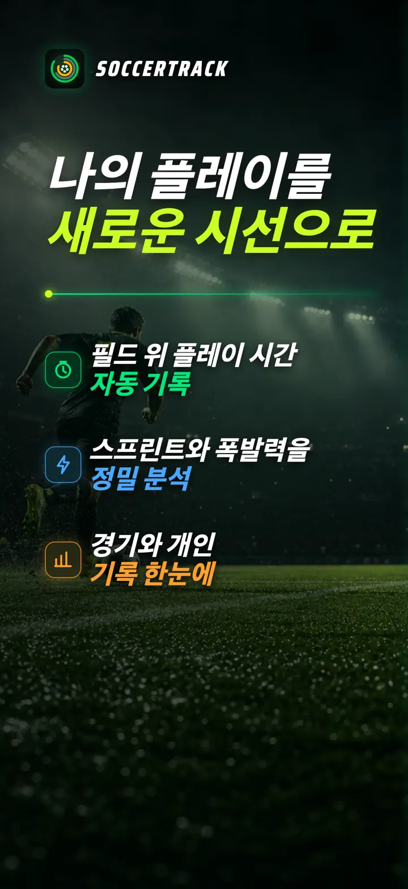
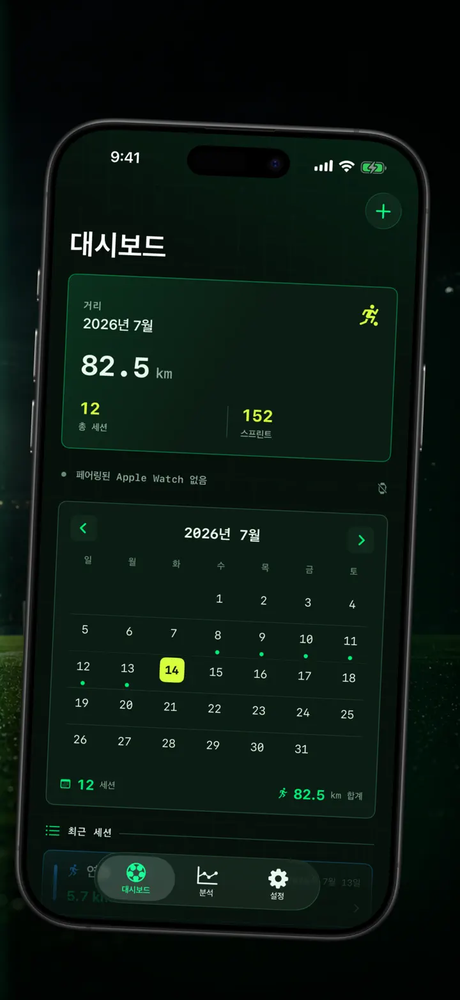
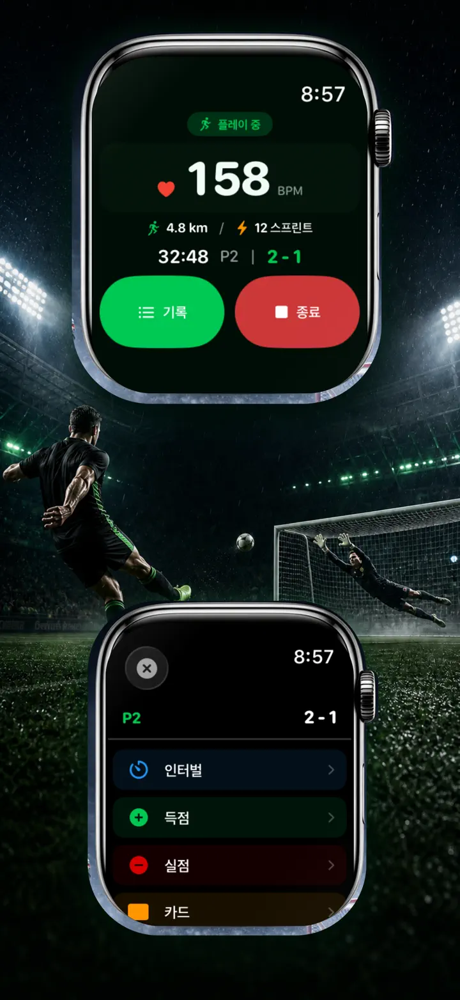
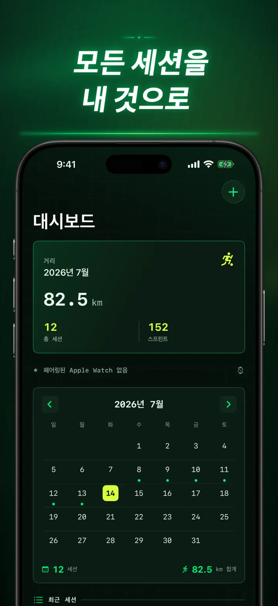
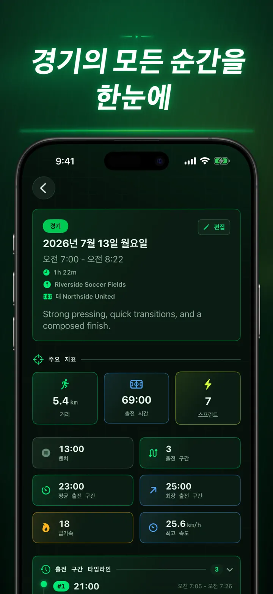
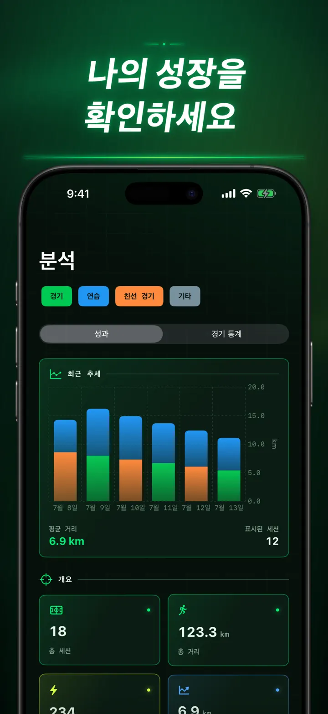
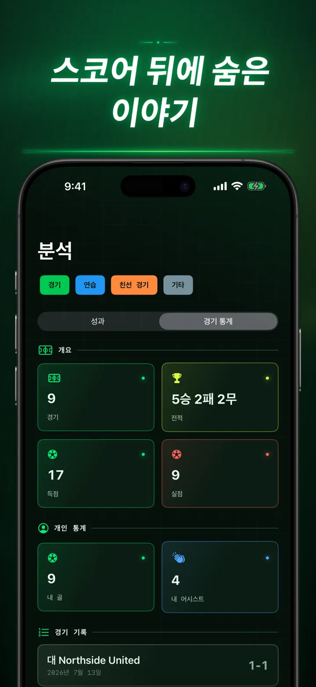
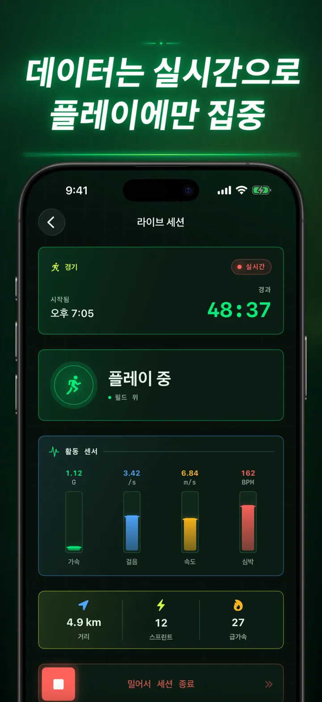
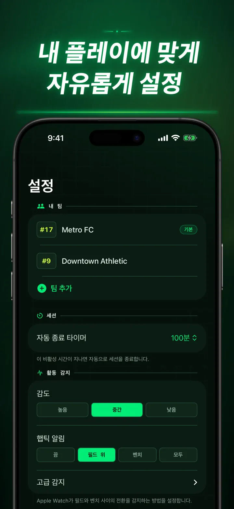
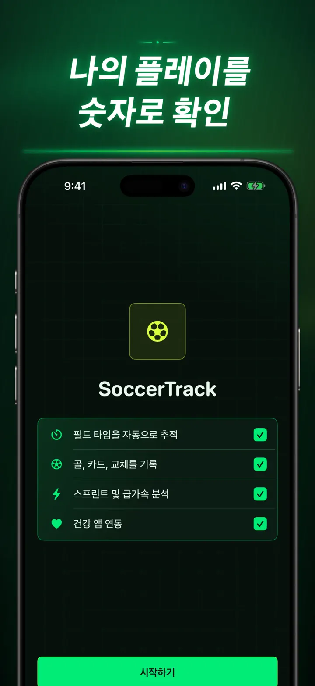

Soccer Time Track
축구 출전 시간과 경기 분석
세션을 시작하고 경기에 집중하세요. Apple Watch가 출전 시간과 벤치 시간을 자동으로 나누고 실시간 지표, 스프린트, 경기 이벤트와 추세를 기록합니다.
App Store에서 다운로드
앱 정보
내 경기를 새로운 시선으로 확인하세요.
Soccer Time Track은 최종 점수 너머의 플레이를 이해하고 싶은 선수를 위한 경기 트래커입니다. Apple Watch에서 시작하고 경기에 집중한 뒤, iPhone에서 퍼포먼스를 자세히 돌아보세요.
출전 시간 자동 기록
언제 실제로 뛰었는지 확인할 수 있습니다. 움직임, 운동, 위치 신호를 활용해 플레이 중, 낮은 활동, 벤치 시간을 구분합니다.
- 출전 시간과 벤치 시간
- 플레이 구간과 명확한 타임라인
- 전체 세션의 상세 분석
손목에서 기록하는 경기
경기, 연습, 친선 경기, 기타 중에서 선택하세요. 플레이 중 다음 내용을 기록할 수 있습니다.
- 우리 팀과 상대 팀의 득점
- 내 골과 도움
- 옐로카드와 레드카드
- 선수 교체와 전·후반 구분
숫자로 보는 내 플레이
출전 시간뿐 아니라 다음 지표도 확인하세요.
- 거리
- 평균 및 최고 속도
- 스프린트와 고강도 가속
- 심박수와 활동 칼로리
- 케이던스와 가속도
실시간 데이터, 경기에 온전히 집중
페어링된 iPhone에서 실시간 지표를 볼 수 있으며 Apple Watch는 운동 기록을 계속합니다. 경기에 집중하는 동안 데이터는 백그라운드에서 쌓입니다.
성장을 확인하세요
경기, 연습, 친선 경기와 기타 세션을 하나의 기록에서 확인하세요. 추세와 개인 최고 기록을 살펴보고 세션을 비교할 수 있습니다. 팀, 등번호, 상대, 장소, 메모를 추가해 각 결과의 배경도 남길 수 있습니다.
데이터가 다른 곳에 필요하다면 세션, 플레이 구간, 경기 이벤트를 CSV 또는 JSON으로 내보내세요.
APPLE WATCH와 건강 앱에 최적화
허용하면 Soccer Time Track이 운동, 심박수, 움직임, 위치 데이터를 사용해 분석을 만들고 완료된 축구 운동을 건강 앱에 저장합니다. 자동 기록에는 Apple Watch가 필요합니다. iPhone에서 세션을 직접 추가할 수도 있습니다.
내 데이터, 내 경기
세션은 기기에 보관되며 iCloud 동기화를 켜면 개인 iCloud 데이터베이스에 저장됩니다. Soccer Time Track에는 계정, 광고, 제3자 분석 도구가 없습니다.
얼마나 뛰었는지 추측하지 마세요. 매 순간 무엇을 해냈는지 확인하세요.
개인정보 처리방침: https://masawata.net/SoccerTimeTrack/privacy-policy.html 서비스 이용 약관: https://www.apple.com/legal/internet-services/itunes/dev/stdeula/
스크린샷









Soccer Time Track
세션을 시작하고 경기에 집중하세요. Apple Watch가 출전 시간과 벤치 시간을 자동으로 나누고 실시간 지표, 스프린트, 경기 이벤트와 추세를 기록합니다.
App Store에서 다운로드